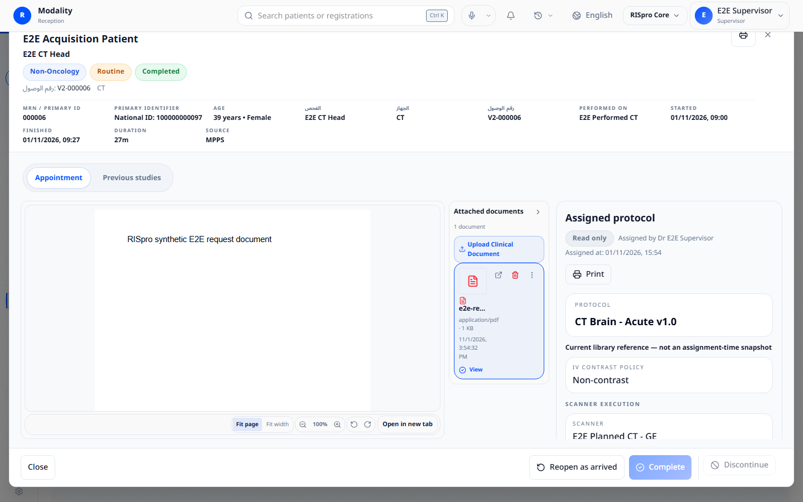
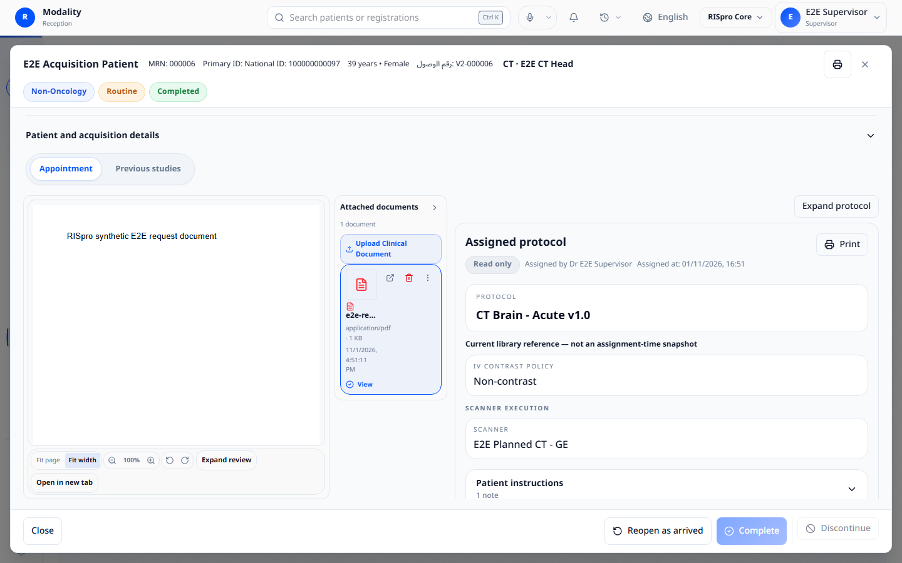
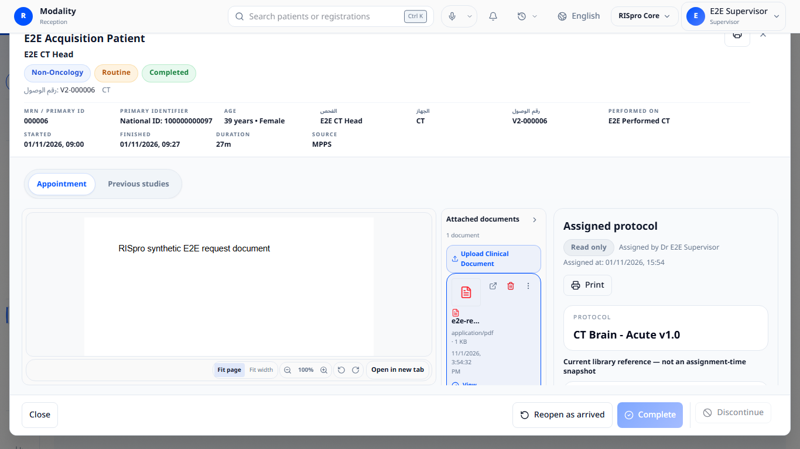
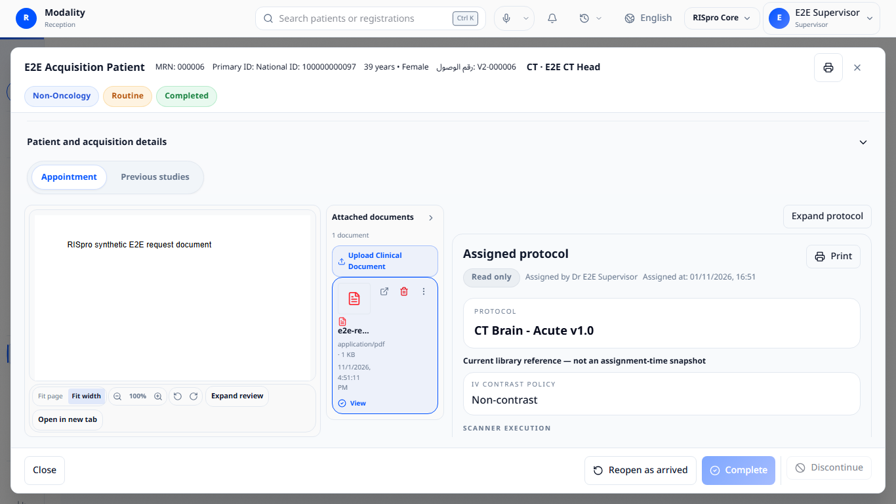
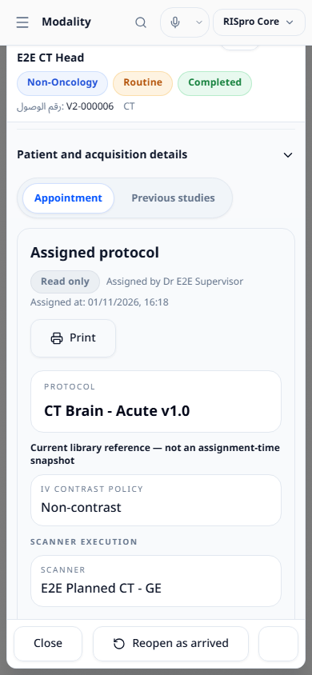
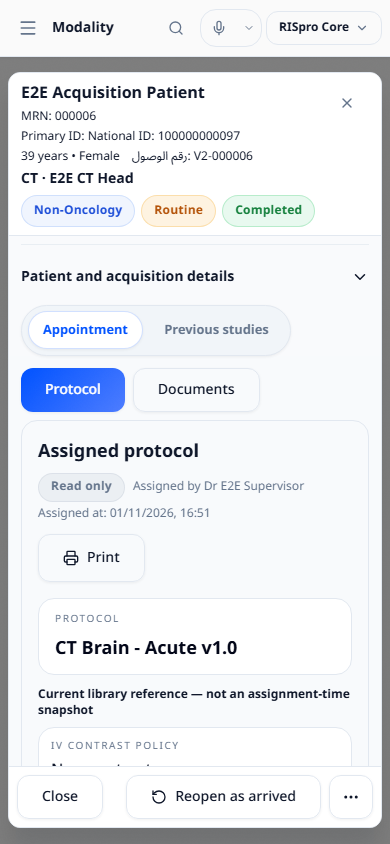

Baseline commit 98f4b68fee925977e8c1023507694909aa130ff8 · synthetic data only · uncommitted changes
The paired captures below use the same seeded completed CT patient and examination; the isolated database was reset between some runs, so seeded timestamps can differ. Other scenario captures are after-only. CT multiphasic, standalone/customized free-text and MRI protocol details use explicitly mocked protocol API responses; the app components and PDFs are real. The MRI screening status is from the disposable database.
Each pair uses the same viewport. The desktop before images are the fully rendered captures from the committed review, whose application code matches the baseline. The newly captured tablet before image was rejected because its PDF was still loading; only its after image is available. Click an image to open it at full size.




Before capture unavailable; view after.


Equivalent 1366 × 768 and 768 × 1024 images are in the after folder. Screenshots demonstrate synthetic rendered states and are not clinical validation.
In the committed review, the 1440 × 900 CT banner measured 220 px and the document/protocol grid 427 px high. The current same-type fixture measured approximately 82 px and 486 px respectively: 138 px less banner content and 59 px more grid height. At 1366 × 768, grid height rose from 303 px in the review to approximately 354 px. The fixed toolbar inset and expanded Details control consume part of the recovered height. Current measurements are in geometry JSON.
At 1440 × 900 the current split measured 677 px each for document and protocol sections; the 180 px document rail remains within the document section and can be collapsed. Both panels can be expanded. Mobile switches between mounted panels; the selected PDF is retained.
The new Playwright suite checks the specified viewport sizes, physical hit testing of the patient name, top-bar and footer bounds, a one-page saved CT, no-document/no-protocol state, actual 4- and 10-page PDFs, switching, independent PDF scroll, selection persistence, Arabic layout, mocked 22-line standalone and linked customized free text, mocked three-phase CT timing, and mocked MRI sequences with a persisted synthetic MR safety-review warning. Existing reopening tests exercise a synthetic discontinued/reopened examination in desktop Modality and mobile Registration; see the desktop confirmation and result.
Full before/after pairs for every scenario were not captured. The complex prescriptions are mocked frontend responses rather than persisted protocol assignments. The reactivation journey does not establish protocol retention, and long-name/missing-ID combinations, 200% browser zoom, physical scanner/printing, hospital workstation behavior, comprehensive accessibility, and production workflows remain unverified.
npm run typecheck:frontend and npm run build:frontend on the final frontend tree.npx playwright test e2e/specs/modality-layout-phase1.spec.ts --reporter=line, 5/5; protocol response mocks are identified above.